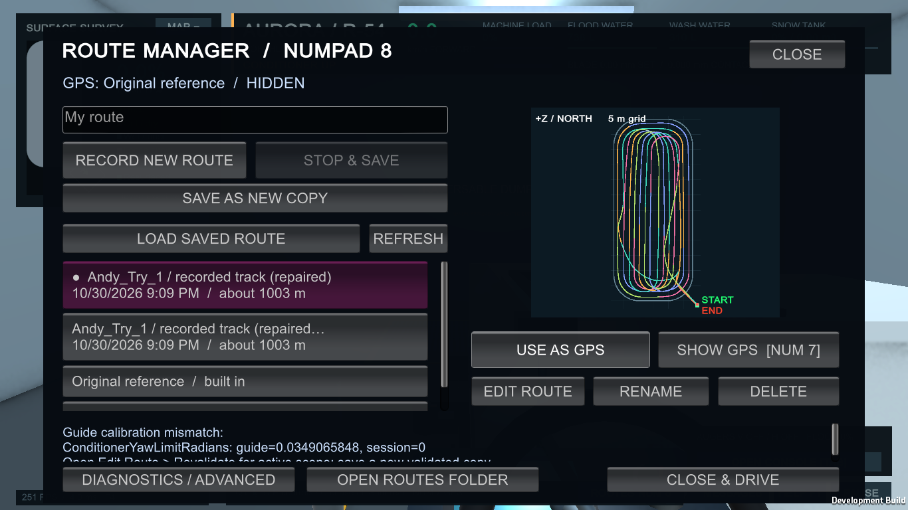
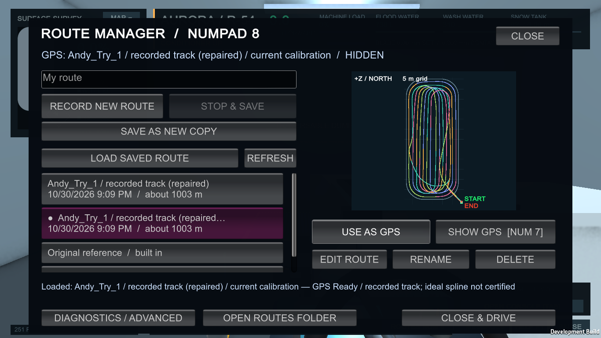
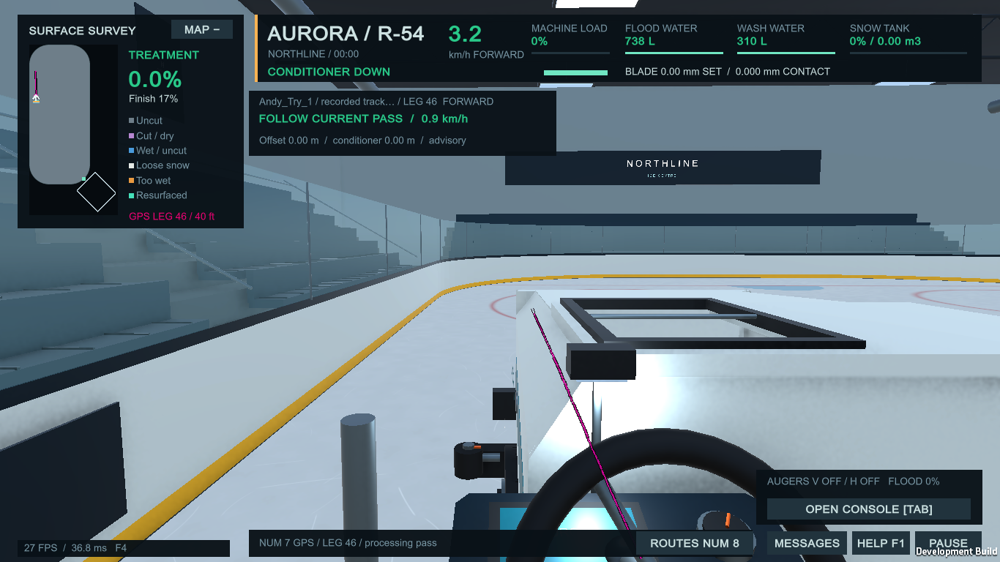
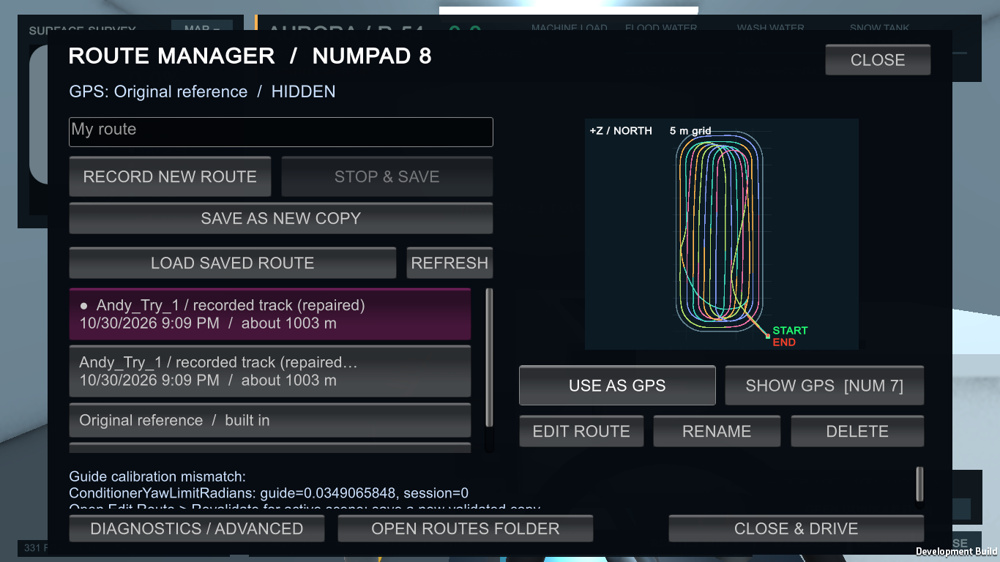
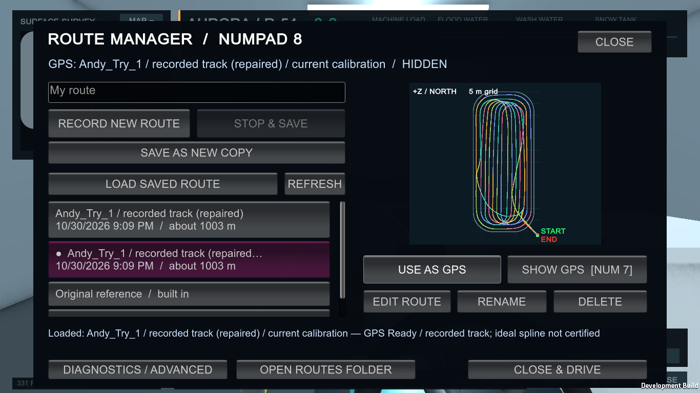
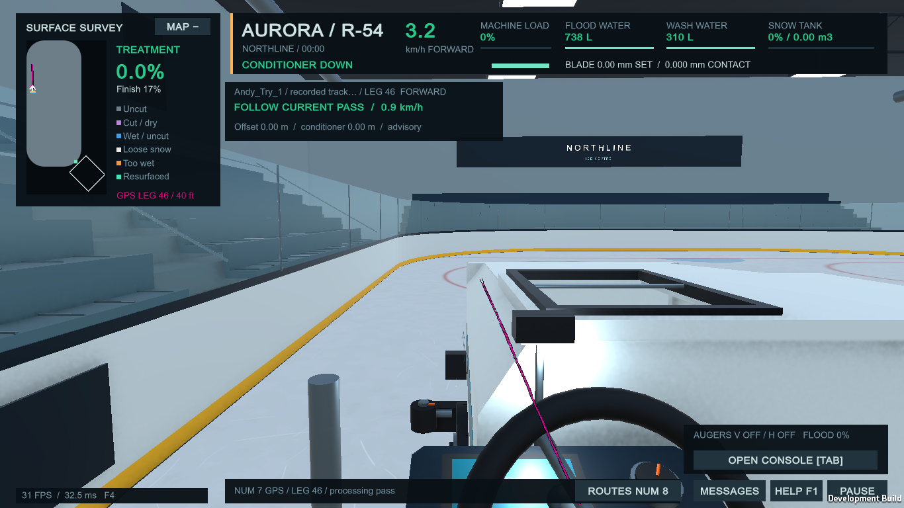
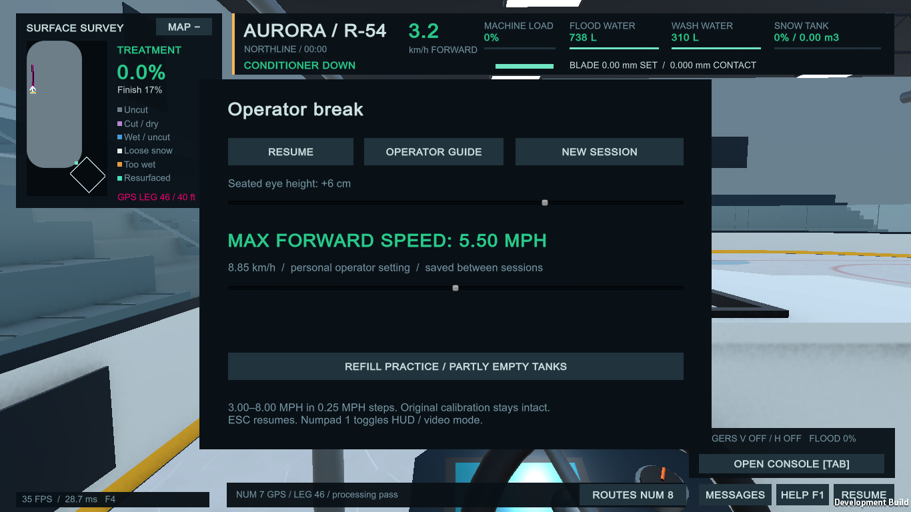

Actual native 1366×768 framebuffers from both unchanged scenes. The GPS camera pose is explicitly seeded after the complete sequential observation replay; it is not a newly driven route. Earlier guide and raw source remain intact.
Validation report · Exact before comparison (all 20 fields) · Modified files






